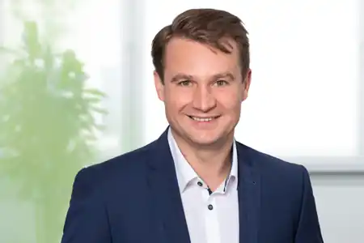

Künstliche
Intelligenz
Generative KI, Large Language Models, KI-Agenten und Natural Language Processing – von der methodischen Grundlage bis zur konkreten Anwendung.
Geschäftsführer · Informatiker · KI-Forscher
Technologie verstehen.
Potenziale erkennen.
Wirkung erzielen.
Ich verbinde langjährige Erfahrung in der Softwareentwicklung und Unternehmensführung mit wissenschaftlich fundierter KI-Expertise. Mein Anspruch: Technologie so einsetzen, dass sie einen konkreten Nutzen schafft.

01 / Profil
Ich bin Geschäftsführer der SET GmbH in Hannover, Informatiker und promovierter KI-Forscher. Mein beruflicher Weg führte mich von der Softwareentwicklung über die Entwicklungsleitung bis in die Unternehmensführung.
Diese unterschiedlichen Perspektiven prägen meine Arbeit bis heute: Ich interessiere mich sowohl für die technischen Details als auch für die Frage, wie aus neuen Technologien tragfähige Lösungen werden.
Aktuell setze ich Agentic AI ein, um Prozesse bei SET – insbesondere in Entwicklung und Support – sowie bei unseren Kunden zu optimieren. Ein weiteres Thema ist die Digitalisierung der Kundenkommunikation mit der EUDI-Wallet.
02 / Schwerpunkte
Drei Perspektiven, ein gemeinsamer Anspruch: technologische Möglichkeiten in praktischen Nutzen übersetzen.
Generative KI, Large Language Models, KI-Agenten und Natural Language Processing – von der methodischen Grundlage bis zur konkreten Anwendung.
Langjährige Erfahrung in der Architektur und Entwicklung hochperformanter Softwaresysteme, der Massendatenverarbeitung sowie dem Reengineering von Altsystemen – mit Fokus auf Skalierbarkeit, Qualität und Wartbarkeit.
Technologie, Prozesse und Menschen zusammenbringen: Softwareprodukte weiterentwickeln, Teams führen und Digitalisierung mit konkretem Nutzen gestalten.
03 / Werdegang
Von der praktischen Softwareentwicklung über wissenschaftliche Forschung bis zur Unternehmensführung.
SET GmbH, Hannover
FHDW Hannover · KI und Machine Learning
Leibniz Universität Hannover · NLP und Knowledge Graphs, berufsbegleitend
SET GmbH · u. a. Entwicklung einer neuen POSY-Softwaregeneration
Diplom-Informatiker (FH), anschließend Master of Engineering · FHDW Hannover
04 / Forschung & Lehre
Forschung vertieft mein Verständnis für KI. In der Lehre und in der Praxis geht es darum, dieses Wissen zugänglich und anwendbar zu machen.
Berufsbegleitende Promotion an der Leibniz Universität Hannover zu Natural Language Processing, Information Extraction und Knowledge Graphs in der wissenschaftlichen Literatur.
Honorardozent an der FHDW Hannover mit Lehrthemen rund um Machine Learning, Natural Language Processing und generative KI.
05 / Persönlich
Neugier, Offenheit für neue Perspektiven und kontinuierliches Lernen prägen mich. Technologie ist für mich kein Selbstzweck: Entscheidend ist, was sich damit sinnvoll verbessern lässt.
Abseits der Arbeit verbringe ich gerne Zeit mit meiner Familie. Beim Laufen, Triathlon und HYROX finde ich Ausgleich und immer wieder neue Herausforderungen.
06 / Kontakt
Für fachlichen Austausch und neue Kontakte bin ich gerne erreichbar.